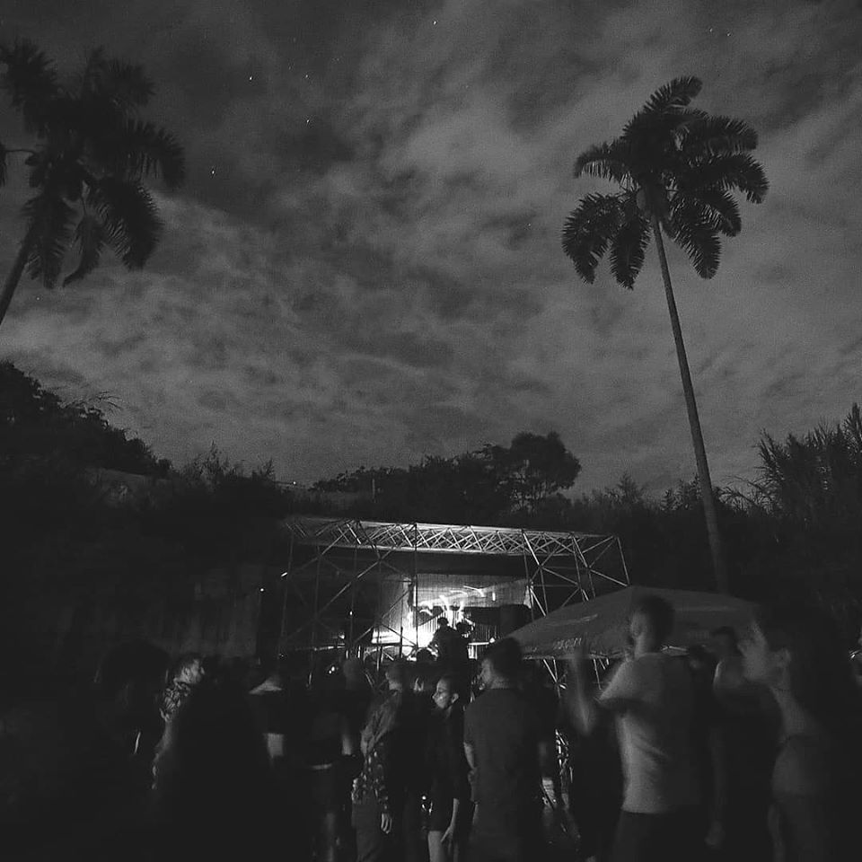
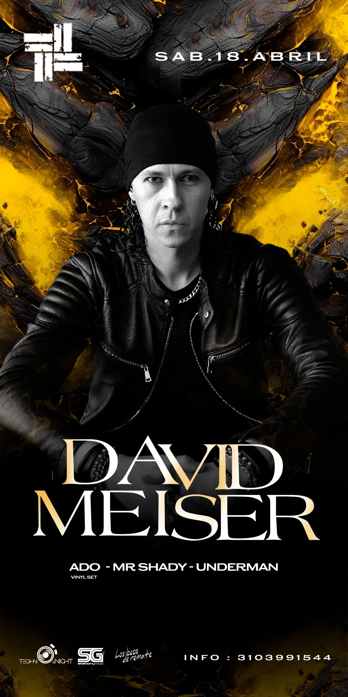
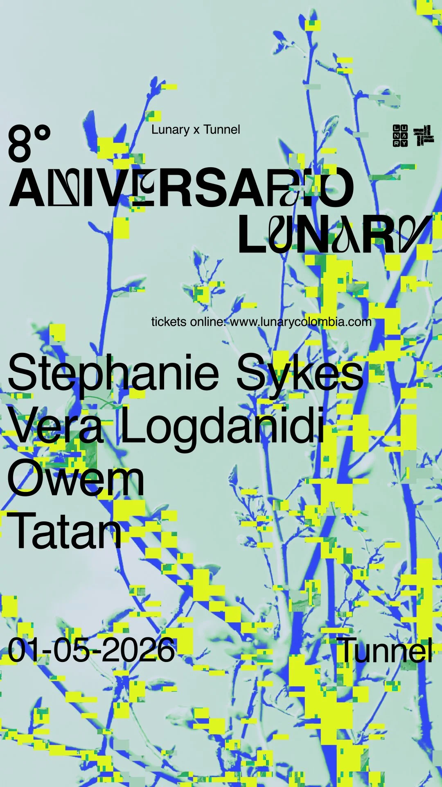
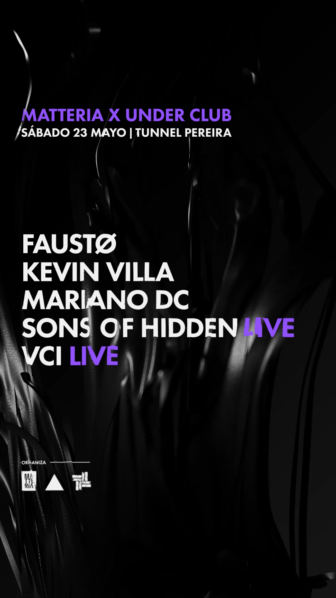

Tunnel Pereira

Tunnel Pereira
An outdoor place with extended hours, without ostentatious luxuries or “VIP” areas. Today we live in the ruins of an abandoned motel devoured by nature. On its entrance road you cross a tunnel that is under a National road. This is how our name was born, and that is where our main stage resides. Our club, specialized in Electronic music, has been a space that has most driven by the growth of the local scene in the last 5 years. We have had the participation of more than 15 Pereiran groups, the presence of more than 300 national artists and more than 250 international artists from many countries such as Japan, Germany, Italy, among them. Every day we work for a safe and inclusive space, where characteristics such as gender, race or religion are superfluous. At Tunnel if you are willing to enjoy and respect, you are always welcome. This has led us to have more than 13,000 registered members who have laughed and danced on the stages, which as of to date, are already 4 stages that are in constant transformation.
Events:

David Meiser
APR18 - 2026

Aniversario Lunary
MAY01 - 2026

Matteria X Under Club
MAY23 - 2026